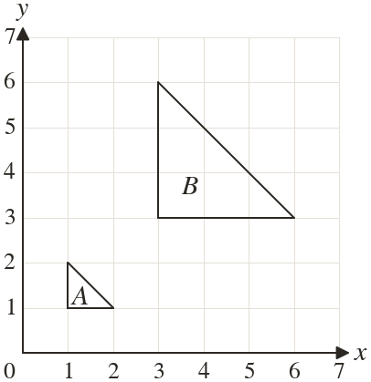
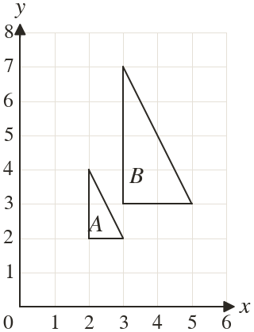

Westonbirt Maths · Transformations
Positive Integer Enlargements
Name: ______________________ Date: ____________
1
For the enlargement that maps A onto B, find
a) the scale factor
b) the centre
a) the scale factor
b) the centre

2
For the enlargement that maps A onto B, find
a) the scale factor
b) the centre
a) the scale factor
b) the centre

3
A side of cm becomes cm in an enlargement. Find the scale factor.
4
maps to and maps to Find
a) the scale factor
b) the centre
a) the scale factor
b) the centre
5
Ben finds the centre of an enlargement by joining corners of A and B that do not match. Why is his centre wrong?
Ext
In an enlargement by scale factor a point is units from the centre. How far is its image from the point itself?